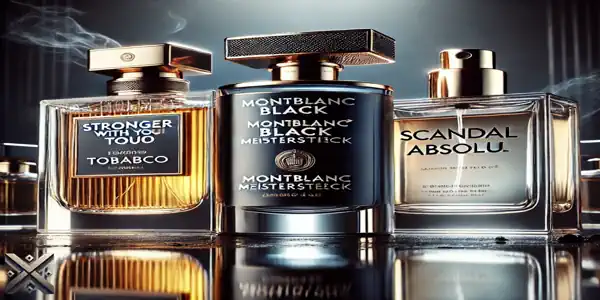
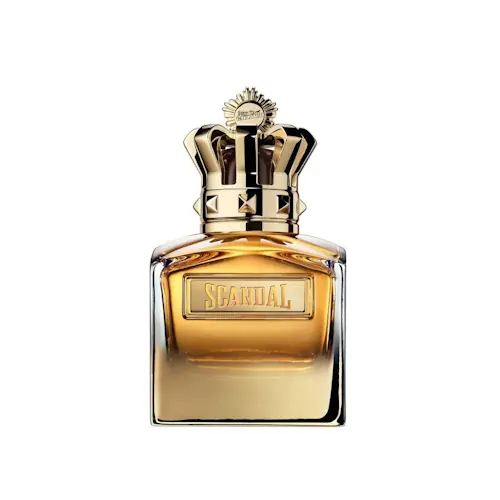
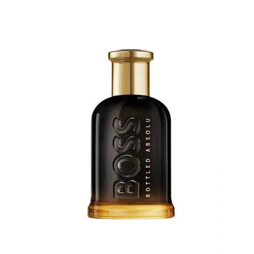
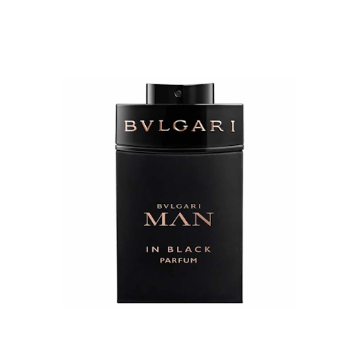
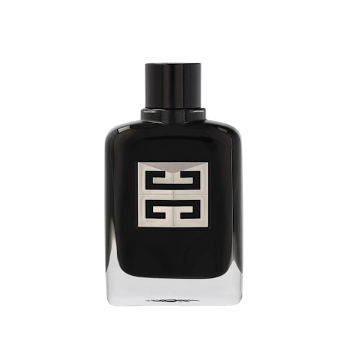
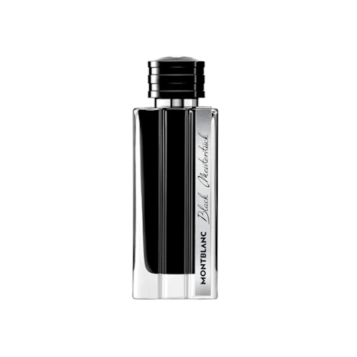
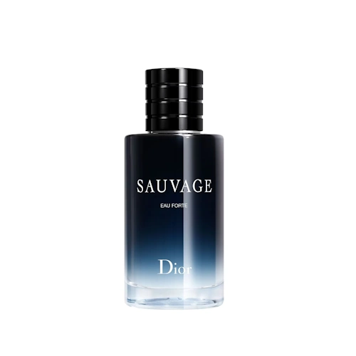
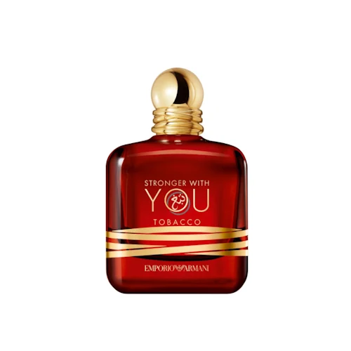

Escolher um perfume masculino importado pode ser um desafio, pois existem diversas opções sofisticadas no mercado. Para quem deseja marcar presença e deixar uma impressão duradoura, a escolha certa faz toda a diferença. Neste artigo, apresentamos os 7 melhores perfumes masculinos importados que combinam sofisticação, potência e elegância.
Vamos conferir quais são eles? Além de destacar fragrâncias icônicas, também daremos dicas sobre como escolher o perfume ideal para cada ocasião. Assim, você poderá encontrar a essência que mais combina com sua personalidade e estilo.

Os perfumes masculinos importados são verdadeiras obras de arte olfativas, combinando tradição, inovação e luxo. Criados pelas melhores casas de fragrâncias do mundo, cada essência é cuidadosamente desenvolvida para expressar personalidade, poder e elegância.
Cada perfume se enquadra em uma família olfativa distinta. Os amadeirados transmitem sofisticação e masculinidade com notas quentes de sândalo e cedro. Já os cítricos são ideais para o dia a dia, trazendo frescor e energia por meio de notas de limão, bergamota e laranja. Para os que buscam intensidade e mistério, os orientais combinam especiarias, âmbar e baunilha, criando fragrâncias marcantes e sedutoras.
A concentração da fragrância também é essencial na escolha do perfume perfeito. O Eau de Toilette (EDT) proporciona frescor e leveza, sendo ideal para uso diário. Já o Eau de Parfum (EDP) apresenta maior fixação e projeção, perfeito para ocasiões especiais e momentos memoráveis.
Usar um perfume importado vai além do aroma; é uma forma de expressão, um detalhe que complementa o estilo e reforça a presença. Afinal, um perfume não é apenas um cheiro, mas uma assinatura inesquecível.

O Scandal Absolu, da grife Jean Paul Gaultier, é um perfume que exala ousadia e sedução. Trata-se de uma fragrância intensa e envolvente, ideal para noites especiais e momentos que pedem sofisticação. Ele se destaca por suas notas de caramelo, fava tonka e madeira de sândalo, resultando em um aroma quente e irresistível.
Além da fixação de longa duração, o Scandal Absolu proporciona uma projeção marcante, tornando-se uma opção perfeita para homens confiantes que não têm medo de se destacar. Seu frasco icônico, com um design robusto e imponente, reflete a personalidade forte dessa fragrância.

O clássico da Hugo Boss, Boss Bottled Absolu, é uma versão refinada e intensa do tradicional Boss Bottled. Ele mantém a elegância característica da linha, mas com um toque amadeirado mais profundo e sofisticado.
As notas de topo trazem maçã, bergamota e ameixa, que conferem um frescor frutado inicial. Em seguida, entram as notas de coração com canela e mogno, adicionando calor e profundidade à fragrância. Por fim, as notas de base compostas por olíbano e sândalo garantem um fundo cremoso e amadeirado, ideal para ocasiões especiais e ambientes profissionais.

O Man in Black Parfum, da Bvlgari, é um perfume intenso e sofisticado, criado para homens que querem exalar masculinidade e mistério. Inspirado na mitologia grega, esse perfume combina notas quentes e amadeiradas, resultando em um aroma marcante e irresistível.
As notas de topo incluem rum, especiarias e tabaco, proporcionando um começo encorpado e quente. No coração, encontramos couro, íris e tuberosa, que adicionam um toque floral sofisticado sem perder a masculinidade. Finalizando, a base contém fava tonka, madeira guaiac e benjoim, conferindo um toque amadeirado e cremoso à fragrância.

A Givenchy apresenta o Gentleman Society Extreme, uma versão intensa e ousada da linha Gentleman. Esse perfume representa o homem moderno e sofisticado, trazendo um equilíbrio perfeito entre frescor e profundidade amadeirada.
As notas de saída combinam cardamomo e sálvia, criando um início vibrante e aromático. No coração, o aroma se transforma com vetiver duplo e cedro, que conferem um toque amadeirado marcante. Por fim, a base composta por baunilha e fava tonka adiciona um dulçor refinado e sensual.

O Montblanc Black Meisterstück é um perfume que exala requinte e exclusividade. Criado para homens sofisticados, essa fragrância combina notas profundas e intensas, ideais para marcar presença.
As notas de topo trazem bergamota e lavanda, criando um frescor inicial refinado. Em seguida, o coração revela um toque de madeira de cedro e vetiver, que trazem masculinidade e robustez. O fundo amadeirado e quente é composto por almíscar e fava tonka, proporcionando um toque sensual e envolvente.

O Sauvage Eau Forte, da Dior, é uma fragrância vibrante e marcante, ideal para homens que gostam de frescor aliado à intensidade. Essa versão apresenta uma nova interpretação do clássico Sauvage, trazendo mais profundidade e sofisticação.
O perfume abre com notas cítricas de bergamota e toranja, proporcionando um frescor explosivo. No coração, as nuances apimentadas de pimenta preta e lavanda criam um equilíbrio entre frescor e especiarias. A base, composta por madeira de âmbar e patchouli, garante um final amadeirado e intenso.

O primeiro lugar fica com o Stronger With You Tobacco, da Emporio Armani. Esse perfume é a personificação da elegância e masculinidade, oferecendo uma fragrância envolvente e quente que exala confiança.
As notas de topo trazem tabaco e canela, criando uma abertura intensa e sofisticada. No coração, temos um equilíbrio perfeito entre baunilha e fava tonka, que adicionam doçura e profundidade. O fundo é marcado por madeira de cedro e castanha caramelizada, garantindo uma base amadeirada e viciante.
Escolher um perfume masculino importado é uma decisão que deve levar em conta o estilo pessoal, as ocasiões de uso e a intensidade desejada. Os perfumes apresentados nesta lista oferecem sofisticação, projeção e fixação de alta qualidade, garantindo que você se destaque com elegância e personalidade.
Seja para o dia a dia ou para ocasiões especiais, um bom perfume faz toda a diferença. Invista na fragrância que mais combina com você e marque presença onde quer que vá!
Se você achou útil nossas dicas sobre os Top 7 Perfumes Masculinos Importados ou ainda tem dúvidas, ficaremos felizes em ouvir sua opinião. Há algo que não entendeu ou gostaria de sugerir melhorias? Convidamos você a participar da nossa sessão de comentários no blog do Comparativos X.
 Descubra os 7 melhores perfumes masculinos de 2025!
Descubra os 7 melhores perfumes masculinos de 2025!